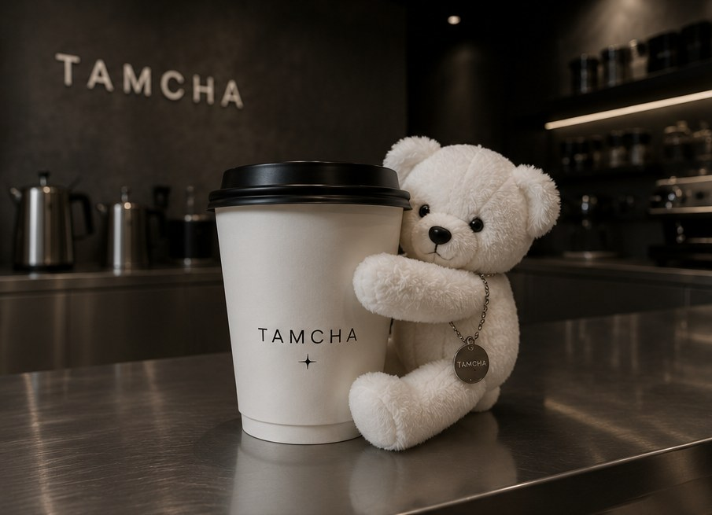
01
COFFEE
Café de especialidad y matcha ceremonial. Bebidas pensadas para sorprender y conectar, servidas en un espacio que invita a quedarse.
Cafetería · Joyería urbana · Cultura
Jewelry & Coffee
Tres mundos. Una sola experiencia.
Concepto en desarrollo ✦ Primera flagship planeada: Roma Norte, CDMX
Descubrir ↓¿Qué es TAMCHA?
“Creamos un espacio donde el café, la plata y el diseño conviven para convertirse en una experiencia.”
TAMCHA es una marca mexicana que fusiona joyería contemporánea y una cafetería con temática en un mismo espacio: diseño, creatividad y hospitalidad convergiendo en un solo lugar.
Más que vender productos, construimos un lugar al que las personas quieran volver por cómo las hace sentir. El retail físico no está desapareciendo: está evolucionando hacia la experiencia.
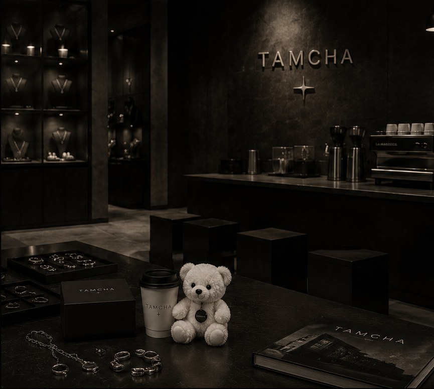
Nuestra propuesta

01
Café de especialidad y matcha ceremonial. Bebidas pensadas para sorprender y conectar, servidas en un espacio que invita a quedarse.
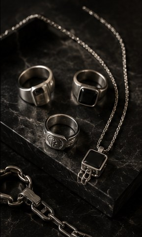
02
Plata .925 con actitud urbana. Piezas curadas con identidad propia: anillos, cadenas y pulseras diseñadas para durar.
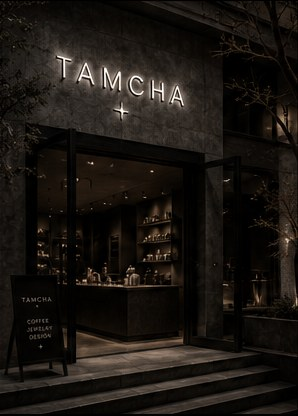
03
Minimalismo brutalista: acero, concreto y luz precisa. Un espacio íntimo, atemporal y sensorial donde cada visita es una forma de expresión.
Líneas iniciales
Piezas de plata .925 diseñadas para durar.
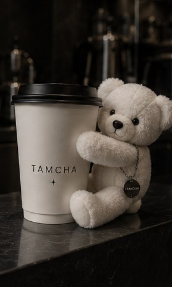
Pensadas para sorprender y conectar.
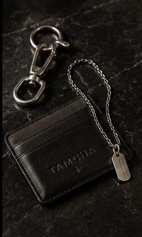
Detalles que complementan tu estilo y tu día a día.
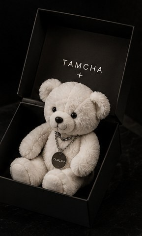
Ediciones limitadas que hacen cada visita única.
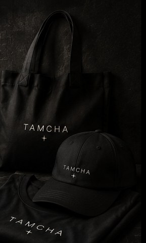
Diseños exclusivos para llevar TAMCHA contigo.
La colección estará compuesta por piezas de plata .925 cuidadosamente seleccionadas con proveedores especializados.
Nuestro valor no está únicamente en la fabricación, sino en la curaduría, la identidad de marca y la experiencia de compra. Jewelry is an attitude.
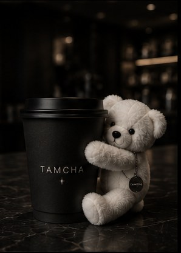
El espacio · materiales
Acero
cepillado
Concreto
pulido
Piedra
volcánica
Vidrio
ahumado
Negro
mate
Luz
LED
Nuestra primera flagship ✦
Uno de los barrios con mayor afinidad hacia conceptos que combinan diseño, gastronomía y experiencias de marca en la Ciudad de México.
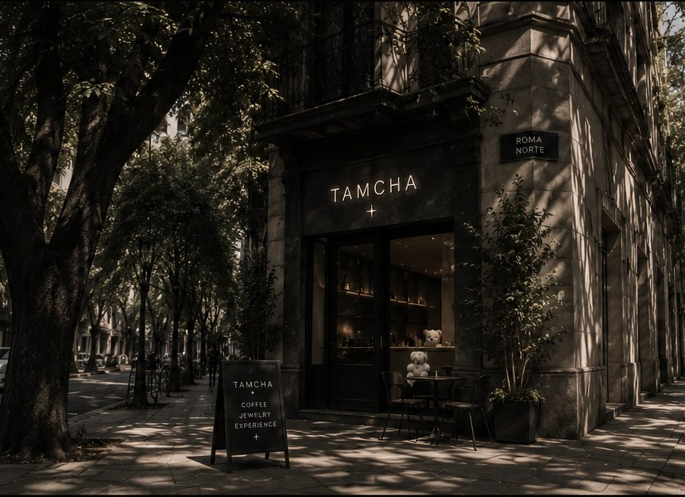
Uno de los principales distritos creativos de la ciudad: arquitectura, galerías, estudios y marcas independientes.
Público que busca nuevas propuestas, valora el diseño y paga por experiencias diferenciadas.
Residentes, turistas, profesionistas y estudiantes: flujo constante de potenciales clientes.
La identidad contemporánea de TAMCHA encaja con el estilo urbano, artístico y cosmopolita de la colonia.
Primera flagship en una de las zonas más influyentes de la Ciudad de México.
“No elegimos Roma Norte por la ubicación. La elegimos porque comparte la misma filosofía que queremos construir con TAMCHA.”
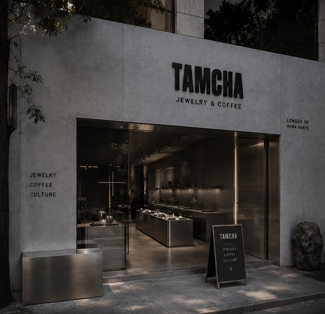
Lista de espera
Apertura en preparación. Déjanos tus datos y sé de los primeros en conocer el espacio, los drops de joyería y las ediciones limitadas.